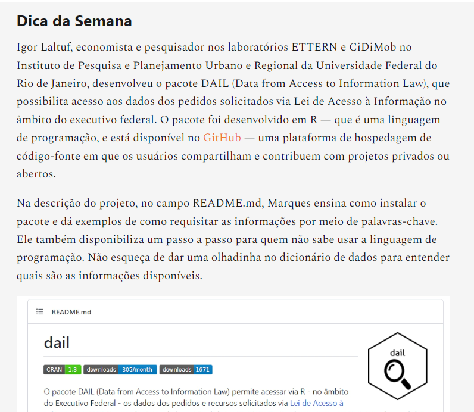

No início de junho, o pacote DAIL (Data from Access to Information Law) foi indicado como dica da semana pela newsletter Investigadora, uma parceria da Abraji (Associação Brasileira de Jornalismo Investigativo) com o Brasil.IO.
Confira a matéria clicando aqui.
